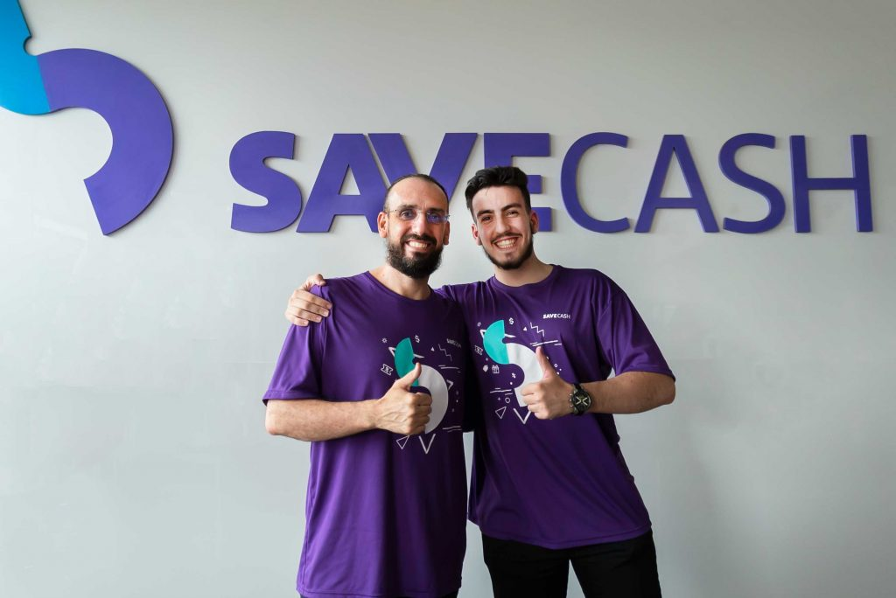
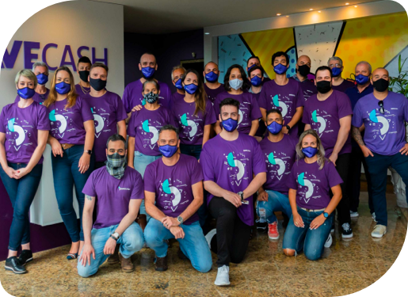
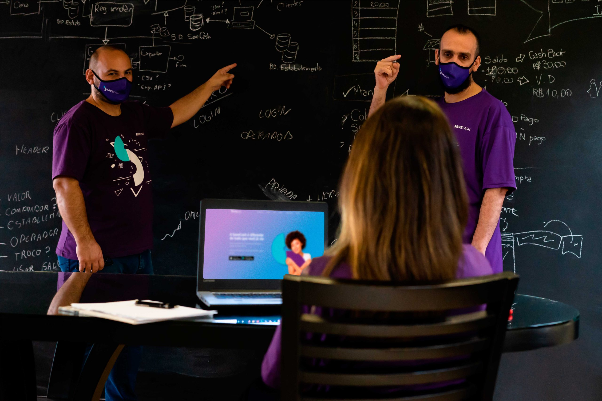
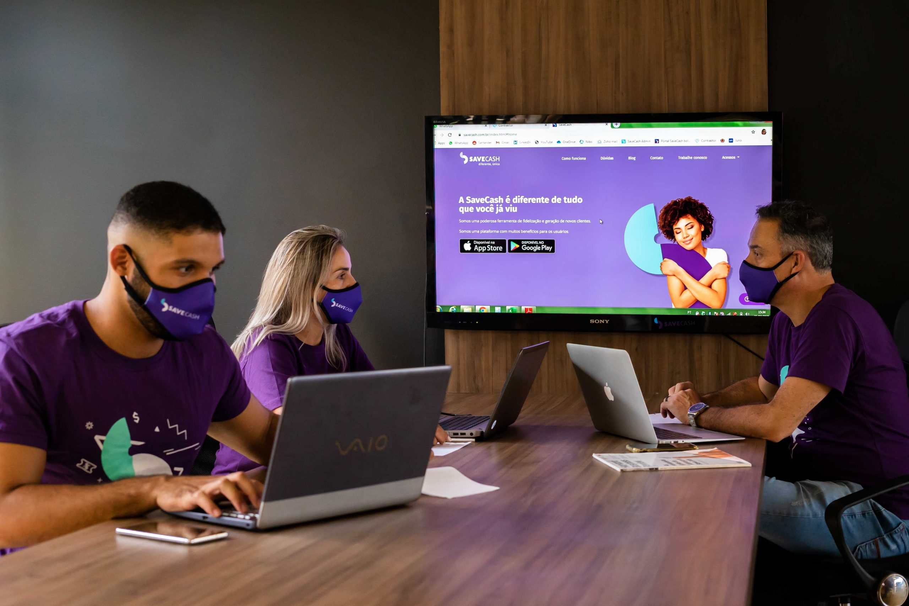
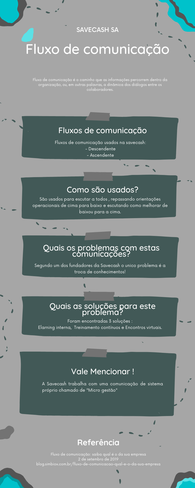

Nossa história!
A Savecash SA teve inicio com 3 fundadores :
- Fabian Ariel Bourscheidt – Fundador
- Fabian Ariel Bourscheidt Junior – Co- Founder
- Helton Kleber Bourscheidt – Co- Founder.
Onde iniciaram as atividades da empresa dia 28/02/2019, a empresa física está localizada na Av. das Águias, 231, Pedra Branca Palhoça/SC.
Começamos com 22 colaboradores e atualmente estamos trabalhando com cerca de 2.800 a 3.200 colaboradores.
O processo de expansão da empresa vem sendo, estruturando a operação no Brasil até o mês de agosto(2022) e liberação da expansão para mais de 160 países, através de um modelo de investimento por micro investidores e crescimento orgânico.
Nossa missão,visão e valores :
Missão:
- Acabar com a fome no mundo, fortalecendo o comércio local, circulando a economia e gerando oportunidades!
Visão:
- Criar um mundo onde as pessoas possam vivem em um compromisso mútuo de ajudar uns aos outros!
Valores:
- Desenvolver um ecossistema onde todos possam evoluir como profissionais e ser humanos melhores, ensinado para aprender, ajudando para ser ajudado!


Portfólios!


Fidelizamos e atraimos novos clientes , trabalhamos com :
- Carteira digital
- Plataforma de Marketing gratuito
- Sistemas de benefícios
- Desenvolvimento social da economia local
Nossos diferenciais mercadológicos :
- Única empresa do mundo que metrifica o CAC (custo de aquisição de clientes)
- Marketplace de bancos digitais
- Marktplace de adquirentes
- POS digital que cobra de forma analógica presencial
- Plataforma única de Cashback sem regras para consumir em novos estabelecimentos
Nosso público alvo é B2B - B2C - B2B2C , buscamos conectar a todos!
Fluxos De Comunicação!
A Savecash opera com dois fluxos de comunicação, o horizontal e o vertical, com a utilização de um sistema próprio chamado de "Micro gestão", onde buscão escutar a todos , repassando orientações operacionais de cima para baixo e escutando como melhorar de baixou para a cima.
O unico problema de comunicação relatado pelo CEO Fabiam Ariel é o "Repasse de conhecimento" , e ele encontrou 3 formas para solucionar o problema Elarning interna,Treinamento contínuos e Encontros virtuais.


Olá me chamo Klisman Gabriel Bourscheidt!
Desenvolvi este blog para a matéria Comunicação aplicada.
Atividade Prática (ATP)